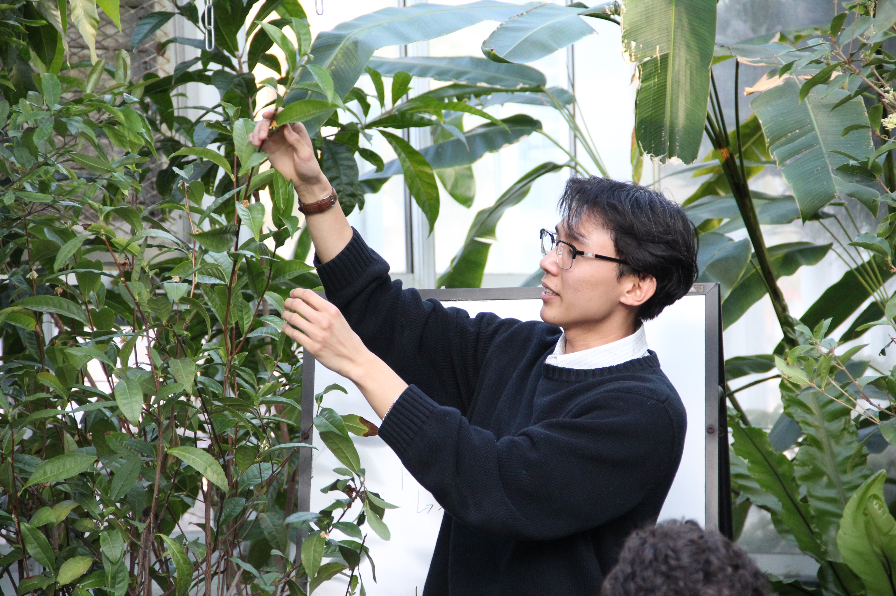
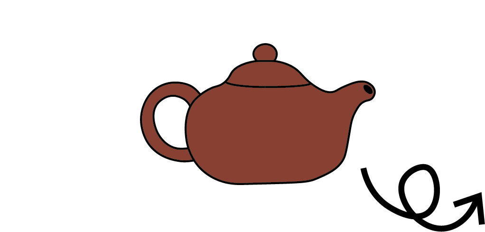

Biochemistry of Tea
Lecturer
Talk about the unappreciated biochemical processes that turn the Camelia sinensis plant into the six types of tea we drink. Intro photo is me next to the tea plant!
[ Hello, I'm ]
I am a senior at Yale studying Molecular Biophysics & Biochemistry with a minor in Data Science. My academic work focuses on using machine
learning methods to design novel enhancers for cell-type-specific experiments in mosquito brains. I am most interested in grounding computational
methods in in vivo experiments, drawing on concepts like "lab in the loop" and papers such as DeepLIFT.
Outside of the lab, I think a lot about how to brew the perfect cup of tea. In science education, I re-founded The Green Cafe to teach biology at
the Marsh Botanical Garden, serve as a Senior Staff Writer for the Yale Scientific Magazine, and co-direct the Science and Civics Fellowship with
CU Society.
Currently drinking: 白毫银针 - Silver Needle White Tea


Have a cup with me!
[ 01 ]
Sorrells Lab, Yale School of Medicine - Department of Genetics
Shendure Lab, University of Washington, Department of Genome Sciences
Sorrells Lab, Yale School of Medicine - Department of Genetics
Sorrells Lab, Yale School of Medicine - Department of Genetics
[ 02 ]
Projects as of late.
Founder and President
My club that brings ecology research to New Haven general public and Yale community, emphasizing non-traditional pedagogical methods.
Senior Staff Writer & Former Scope Editor
Breaking down scientific writing for a broad audience with over 2000+ subscribers around the world. Particularly focusing on research from the Global South or impacting the climate.
Lecturer
Talk about the unappreciated biochemical processes that turn the Camelia sinensis plant into the six types of tea we drink. Intro photo is me next to the tea plant!
Co-Director and Teacher
The 'Science and Civics Fellowship' with CU Society giving highschool students the biochemical tools to think about the changing climate.
[ 03 ]
An assortment of random side projects.